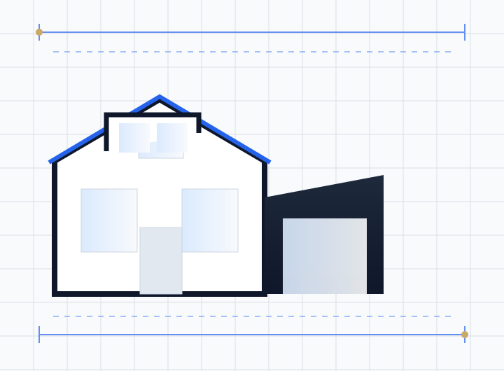

Most people arrive at a loft conversion with a budget and a room in mind. The roof usually has other ideas. The type of conversion available to you is largely determined by the shape of your existing roof, the ridge height, and where the staircase can land — and only then by what you would like to spend.
Here are the four types, what each actually gains you, and how to tell which one your house wants.
Before anything: the head height test
Measure from the top of the existing ceiling joists to the underside of the ridge. You generally want 2.2 to 2.4 metres as a starting point, because the new floor structure below and the roof insulation above will both eat into it.
Below roughly 2.2 metres, a standard conversion becomes difficult. The options then are lowering the ceilings of the rooms below — disruptive and expensive — or a mansard, which rebuilds the roof entirely. Neither is cheap, and it is far better to know in week one.
The second test is the staircase. Building regulations require a fixed stair to any habitable loft room, with 2 metres of headroom over the pitch line, reduced to 1.9 metres at the centre where the stair runs under a sloping roof. Finding that run within an existing landing is the constraint that most often reshapes a design.
1. Rooflight conversion
Also called a Velux conversion. The existing roof structure and shape are left alone; rooflights are fitted flush into the roof slope, the floor is strengthened, insulation is added and a stair is installed.
- Space gained: Least of the four — you get only the space that already existed under the roof.
- Cost: Lowest by a clear margin.
- Planning: Usually permitted development, since rooflights sitting within 150mm of the roof plane and not above the ridge are generally allowed. Restricted in conservation areas.
- Suits: Houses with generous existing ridge height and a steep pitch — often older properties and some 1930s stock.
- Watch for: Usable floor area shrinks dramatically once you exclude the space with less than about 1.5 metres of head height. Measure the usable area, not the footprint.
2. Dormer conversion
A structural box built out from the roof slope, almost always on the rear, with a flat or pitched roof and vertical windows. This is the default British loft conversion and by some distance the most common.
- Space gained: Substantial. A full-width rear dormer converts a large area of low sloping ceiling into full-height floor area.
- Cost: Moderate — more than a rooflight conversion, considerably less than a mansard.
- Planning: Frequently permitted development within the volume allowances, typically 40 m³ for a terraced house and 50 m³ for a semi or detached, provided nothing extends beyond the front roof plane and the ridge is not raised. Removed in conservation areas.
- Suits: Almost any two-storey house with a pitched roof and adequate ridge height. The default choice unless something rules it out.
- Watch for: Large flat-roofed rear dormers are functional but can look heavy. Where the rear elevation is visible from a public space, officers sometimes push back even on permitted development schemes if a certificate is being sought.
3. Hip-to-gable conversion
Where a roof has a hipped end — sloping on three or four sides rather than ending in a vertical gable wall — this type builds that hip end up into a vertical gable, squaring off the roof and creating a large volume of new usable space. Very frequently combined with a rear dormer.
- Space gained: Large, and often transformative on a semi-detached house, because the new volume sits where the ridge height is greatest.
- Cost: Higher than a dormer alone, since it involves rebuilding a section of external wall and re-forming the roof structure.
- Planning: Often permitted development within the 50 m³ allowance for semi-detached and detached houses, subject to the usual restrictions. Only possible on houses that have a hip — so mid-terrace houses are excluded.
- Suits: Semi-detached and end-of-terrace houses with hipped roofs, which describes a very large proportion of British interwar suburban housing.
- Watch for: On a semi-detached pair, converting only one side creates an asymmetric roof. Some councils dislike this; others accept it readily. Worth checking local precedent on the street.
4. Mansard conversion
The roof is rebuilt with a near-vertical rear slope, typically around 72 degrees, and a shallow or flat top. It effectively creates a full additional storey and is common in London terraces and in areas where the roofscape is tightly controlled.
- Space gained: The most of any type by a wide margin — close to a full extra floor.
- Cost: Highest, because it is essentially a rebuild of the roof rather than an alteration to it.
- Planning: Almost always requires full planning permission. In some conservation areas mansards are actively preferred to dormers because they read as a traditional roof form.
- Suits: Terraced houses, particularly Victorian and Georgian, and properties where head height is too low for anything else.
- Watch for: Party wall implications on both sides, and the need for structural design of the new roof from scratch. The programme is longer and the property is more exposed during the build.
Building regulations apply either way
Whichever type you choose, and regardless of whether planning permission is needed, building regulations approval is required. Converting a two-storey house into a three-storey house changes what building control expects, notably:
- A protected escape route from the loft down to a final exit, usually meaning fire doors to habitable rooms off the stair and an enclosed stairwell.
- Mains-wired interlinked smoke alarms on every storey.
- A compliant fixed staircase — a loft ladder is not acceptable for a habitable room.
- A strengthened floor structure, since existing ceiling joists are almost never adequate as floor joists.
- Insulation meeting current Part L standards, at the rafter line or the ceiling line depending on the design.
- Escape windows of adequate size and position, and balustrades at compliant heights.
Which one should you choose?
If your roof has a hip and you want maximum space for the money, hip-to-gable with a rear dormer is usually the strongest answer. If you have a mid-terrace with good ridge height, a rear dormer alone is the efficient choice. If ridge height is marginal and the budget allows, a mansard solves the problem that nothing else can. If you have generous height already and modest ambitions, a rooflight conversion is the sensible, cheap option that too few people consider.
The right sequence is always the same: measure the ridge height, find the staircase, check the planning constraints, and then choose the type. Choosing the type first is how projects end up abandoned at week three.